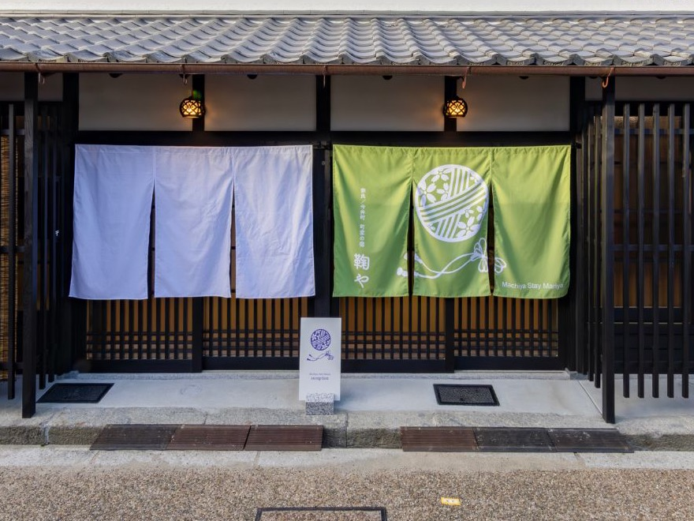
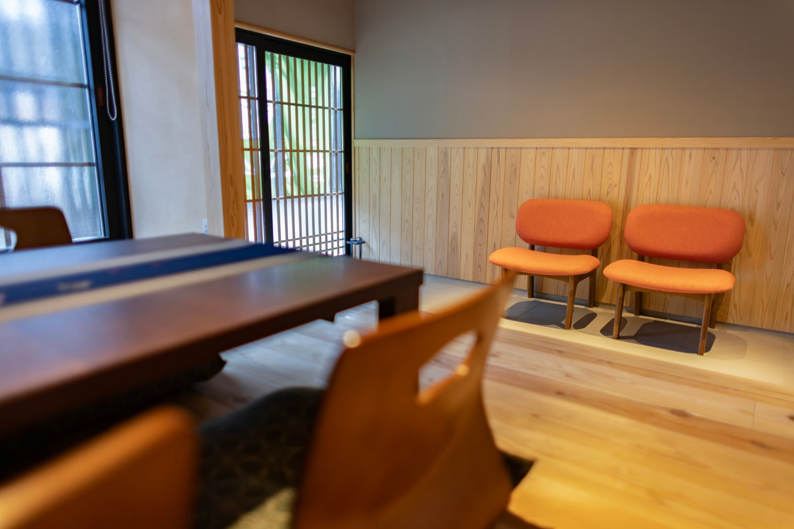
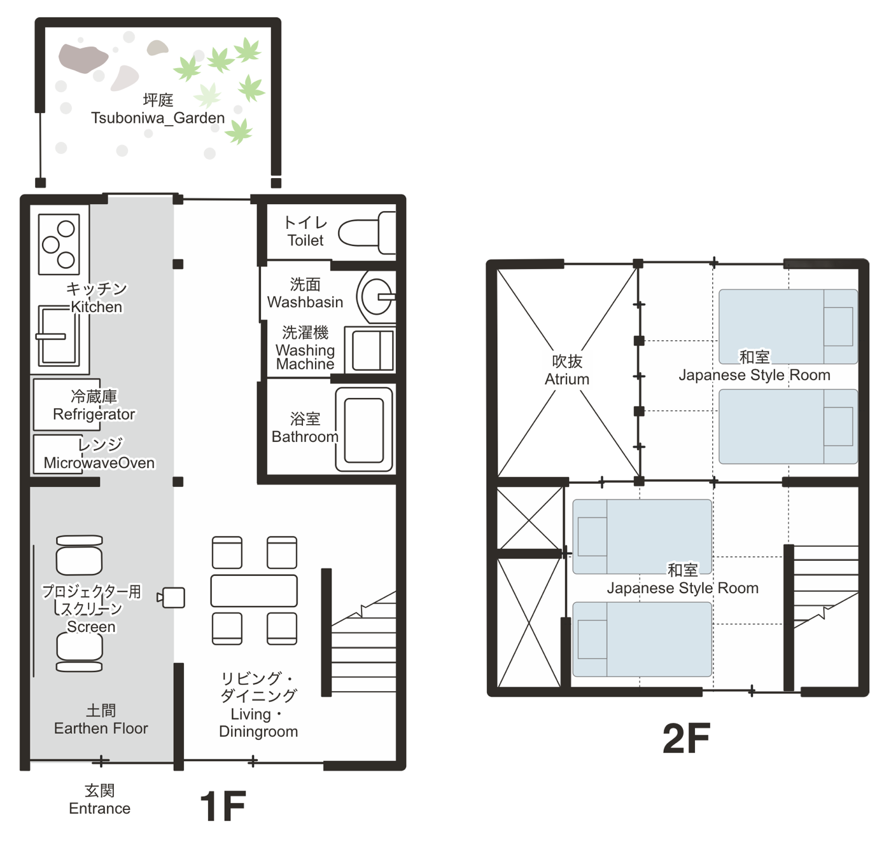
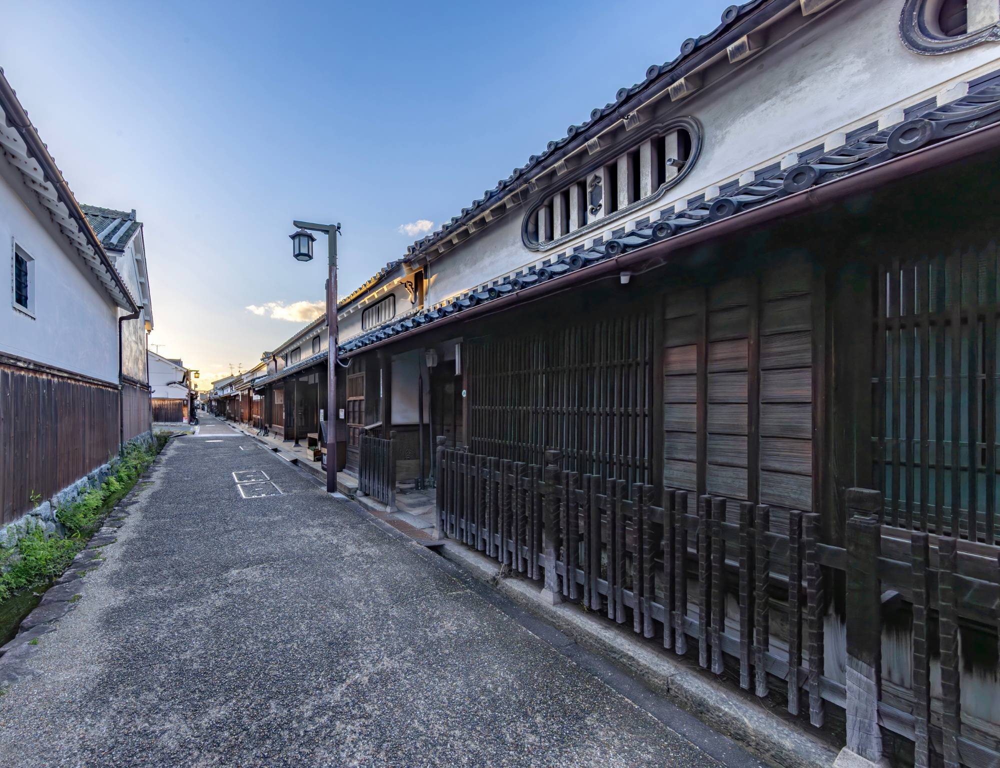
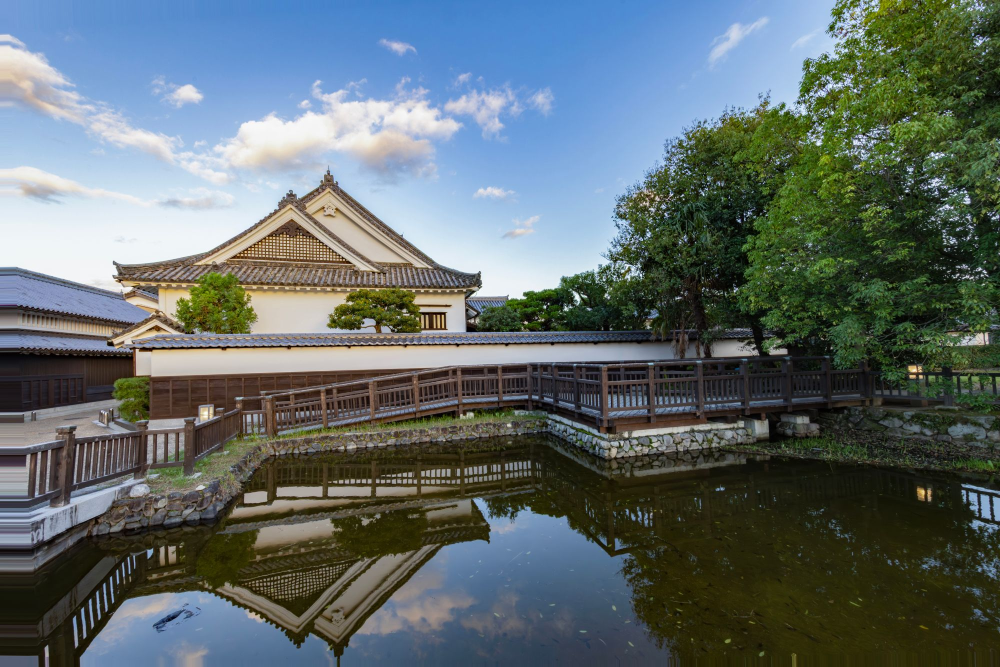

今井町の伝統美に包まれ、
地域の日常を味わう一棟貸しの宿
Machiya Stay Mariya
撮影：茶本晃生
Concept
町家で暮らすように過ごす
室町時代の町並みがいまも残る奈良・今井町。
鞠屋は、この町に佇む町家を一棟まるごとお貸しする宿です。
格子越しのやわらかな光、吉野杉の香り、通りを行き交う人の気配。
観光では出会えない、町の日常をゆっくりとお楽しみください。


Our Stay
施設の紹介
伝統的な町家の佇まいはそのままに、快適に過ごせるよう丁寧に改修しました。
ご家族やご友人と、一棟を貸切でお使いいただけます。

リビング、寝室
太い梁が渡る天井の下でゆったりとおくつろぎいただけます。
吹き抜けとキッチン
光が降りそそぐ吹き抜け。
キッチンで地元の食材を味わうことも。
町家の佇まい
格子と瓦屋根が美しい外観。
鞠の紋が描かれたのれんが目印です。

Imaicho
今井町という町
今井町は、国の重要伝統的建造物群保存地区に選定された歴史ある町。
室町時代から続く町家が軒を連ね、いまも人々の暮らしが息づいています。
朝の静かな路地の散歩、町家カフェでのひととき。
泊まるからこそ味わえる今井町の表情があります。

Access
アクセス
- 名称
- 町家の宿 鞠屋
- 住所
- 〒634-0812 奈良県橿原市今井町1-9-10
- 電車
- 近鉄橿原線「八木西口駅」より徒歩約10分
近鉄大阪線・橿原線「大和八木駅」より徒歩約15分
Contact
お問い合わせ
ご予約・ご質問など、お気軽にお問い合わせください。